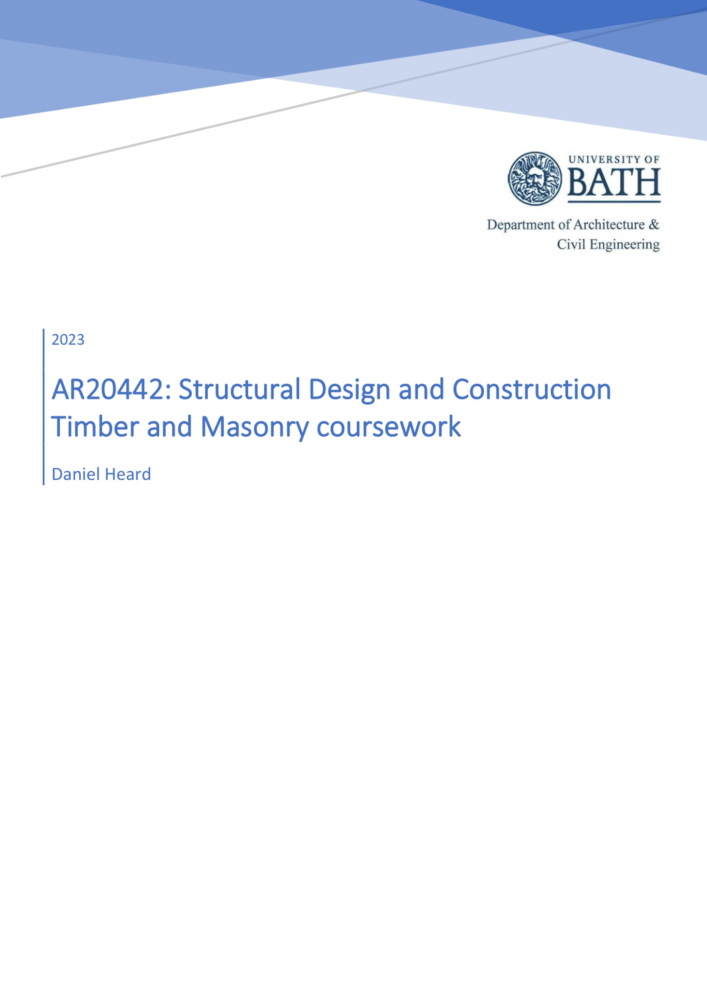
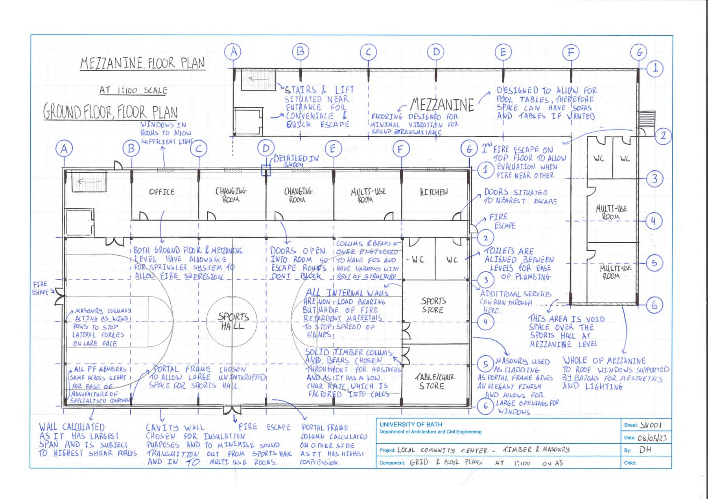
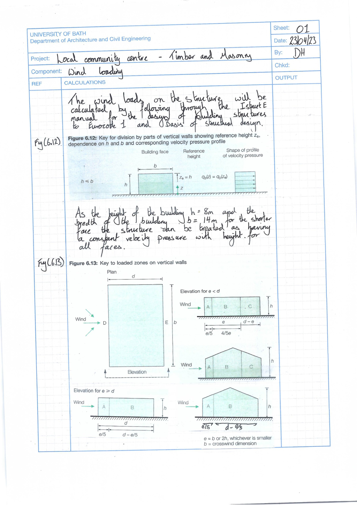

My role
Individual coursework submission covering structural design calculations, detailing considerations, and technical presentation.
Academic - AR20442
Structural design and construction coursework
University coursework submitted under AR20442: Structural Design and Construction, covering timber and masonry design in a longer-form technical submission.
Individual coursework submission covering structural design calculations, detailing considerations, and technical presentation.
Preview pages
Selected pages from the document set to give a quick view of the calculation or report format. Click any image to open a full-screen view.



Project documents
The files below form the project document set. They can be opened directly or viewed in-browser using the embedded PDF frame.
Coursework report covering timber and masonry design.
In-browser viewing
Use the tabs below to switch documents. The active PDF can always be opened in a new tab with the button beside the viewer.
{kind=link}
{kind=link}
{kind=link}